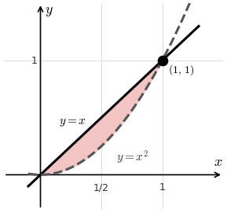

Lesson 39: The Washer Method (x-Axis)
Rotate the region between \(y = f(x)\) and \(y = g(x)\), with \(f \ge g\), about the \(x\)-axis. The solid has a hole, so we approximate it with washers.
\[
\begin{aligned}
\text{Washer} &= \text{Outer Disk} - \text{Inner Disk} \\
&= \pi\left[f(x_k)\right]^2\Delta x - \pi\left[g(x_k)\right]^2\Delta x
\end{aligned}
\]
The Washer Method (about the x-axis)
\[ V = \int_a^b \pi\left(\left[f(x)\right]^2 - \left[g(x)\right]^2\right)dx \]
Find the volume of the solid obtained by revolving the region between \(y = x\) and \(y = x^2\) about the \(x\)-axis.
The curves meet at \(x = 0\) and \(x = 1\). On \([0, 1]\), the outer radius is \(x\) and the inner radius is \(x^2\).
\[
\begin{aligned}
V &= \int_0^1 \pi\left(x^2 - x^4\right)dx \\
&= \pi\left[\frac{x^3}{3} - \frac{x^5}{5}\right]_0^1 \\
&= \pi\left(\frac{1}{3} - \frac{1}{5}\right) \\
&= \frac{2\pi}{15}
\end{aligned}
\]
